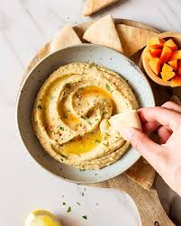
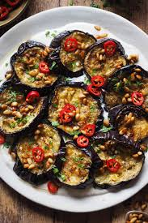
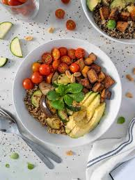

Hummus de Garbanzos Clásico
Una versión suave y cremosa, ideal para picadas, usando comino, pimentón y limón para resaltar el sabor sin necesidad de ajo.
Leer receta
Berenjenas Asadas a las Hierbas
Rodajas crocantes condimentadas con orégano, tomillo y aceite de oliva. Una guarnición simple, rápida y deliciosa.
Leer receta
Bowl de Quinoa y Tofu Crocante
Un almuerzo súper proteico para después del gimnasio. Tofu marinado en salsa de soja y jengibre, sobre una base de quinoa.
Leer receta